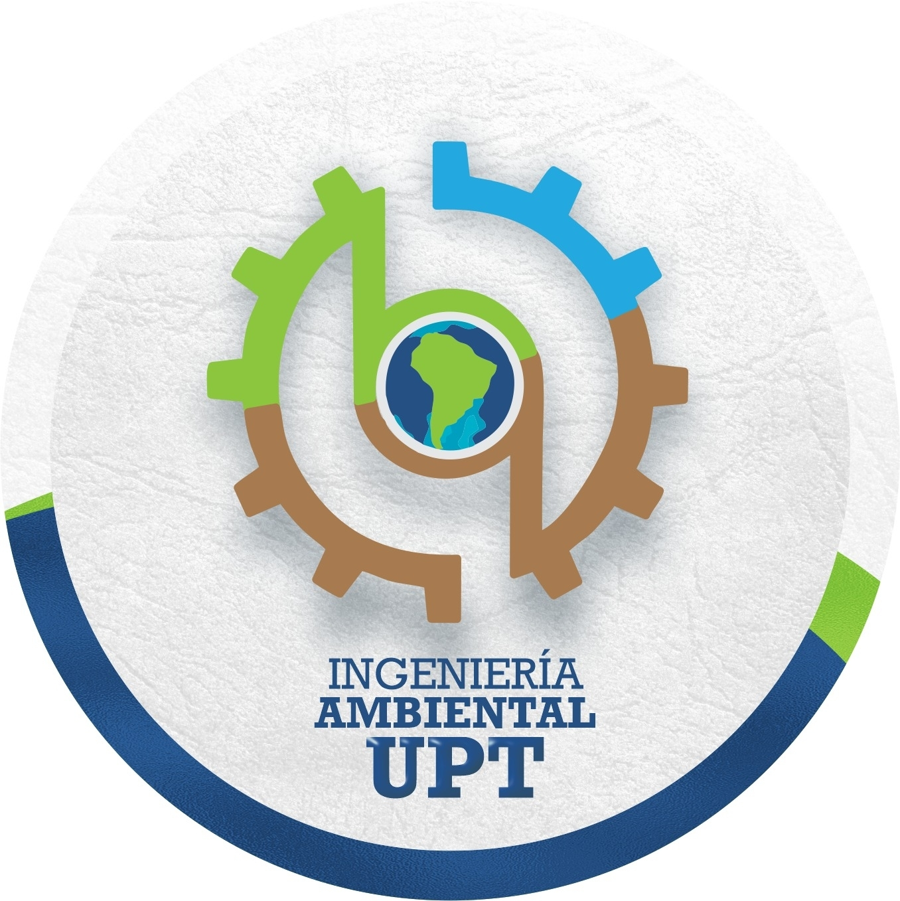
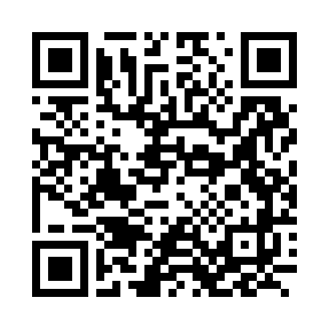

Resúmenes visuales de procedimientos de los laboratorios, creados a partir de los Word revisados manualmente.
Versión piloto: solo para revisión; ante dudas prevalece el SOP completo.
Analizador de gases Testo 340
Código patrimonial: 33691.07.051330 · Matriz de aplicación: emisiones gaseosas y fuentes fijas.
Muestreador Hi-Vol Tisch PM10
Código patrimonial: 33691.07.088216 · Matriz de aplicación: material particulado PM10.

Escanea para compartir este directorio de tarjetas.
Fuente: extracción estructurada de los SOP editados (Word) · tel. laboratorio (052) 427212 - Anexos 418/412.